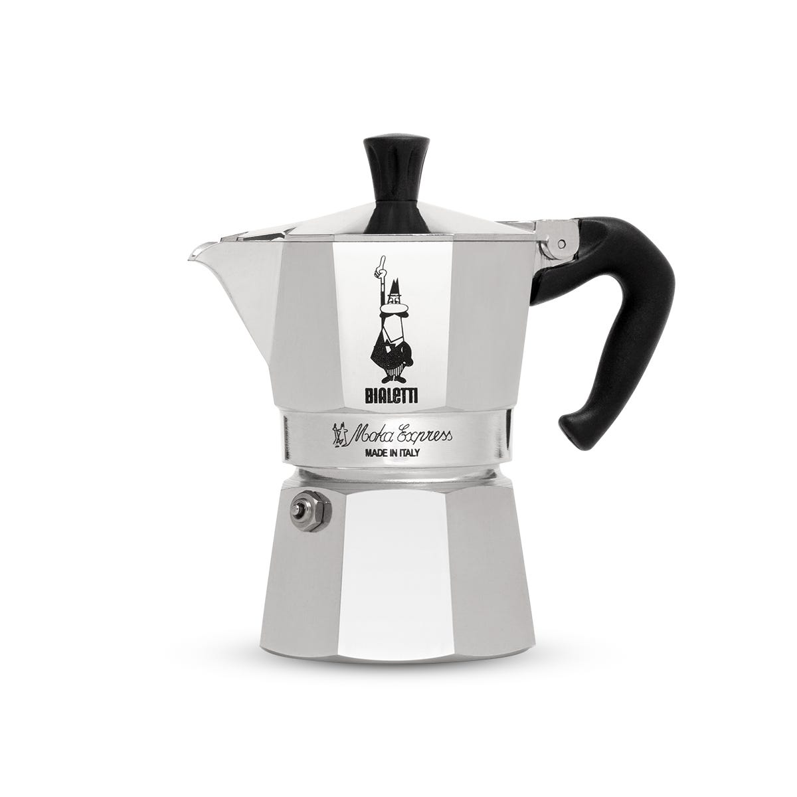
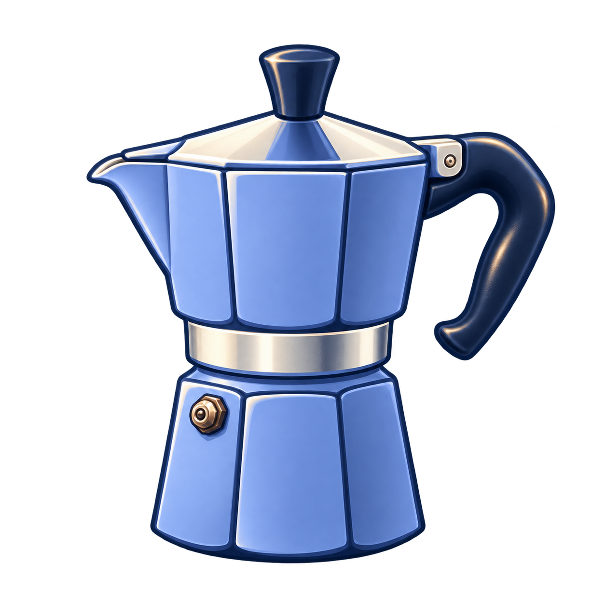

Moka pot
Family extension candidate
48 px
Reference & previous candidate

Complete closed Moka Express: octagonal lower water chamber, screw-joint waist, octagonal upper collecting chamber with a left pour spout, hinged sloping lid and black knob, large black curved handle on the right, and a small safety valve on the lower chamber. Retain the distinctive two-chamber octagonal silhouette.
Equipment source · Exact prompt
Previous glossy treatmentCurrent selection